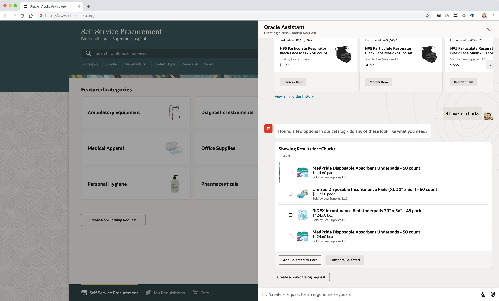
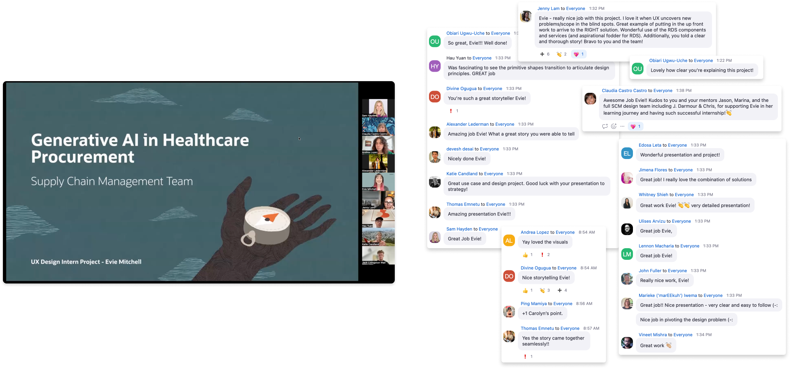

Redesigning healthcare procurement to prevent unnecessary requests and improve buyer-requester communication.
- Timeline
- Summer 2023, 12 weeks
- Role
- UX Design Intern
- Team
- Supply Chain Management
- Skills
- User research, design for AI, conversational design, Figma

01Overview
I designed a conversational interface leveraging generative AI and natural language processing to automate a time-consuming, tedious task for buyers.
As an intern on the supply chain management team, I had the opportunity to envision the future of healthcare procurement, exploring use cases for the growing new tech of generative AI and large language models. I designed two projects over the course of the summer, improving communication between two different end users. One focused on a conversational assistant intervening to prevent the issue, while the other was a dashboard redesign with AI-assistive features to improve the buyer's workflow.
15+
hours of buyer time wasted per week on unnecessary requests
02Solution ✨
I spent 6 weeks on user research & synthesis, 6 more on iterating concepts, and then presented my findings and two final prototypes to the greater design organization.

03Takeaways
The specifics of my designs are private under NDA, but I can share a few takeaways!
Challenge the brief
I discovered a new problem space through my own research, and made some important insights on the root of the problem, a new discovery that led my mentors to pivot and rescope the entire project brief!
Story always wins
I learned so much as a speaker over the summer, presenting at nearly a dozen key milestones and evolving my storytelling skills, learning to articulate design thinking and sell my designs to stakeholders.
Go above and beyond
Over the course of the internship, I designed two products in the timeframe for one, and received the unique opportunity to present both projects to their product strategy teams, who are now using my insights to guide the future of 3 different products!
- 2 products designed in the time for one
- 3 product teams using my insights
- ~12 key milestones I presented at
I'd love to share more about this project. To hear more details, contact me!
04Reflection
I had an amazing time getting to know my team, my fellow interns, Oracle, and Seattle!
I couldn't have asked for a better internship experience. I learned an incredible amount from all of the experienced and knowledgeable designers in my organization, especially my amazing mentor Jason, from collaboration with my fellow interns, and from the complex and adaptable Redwood Design System. Thanks Oracle 💗